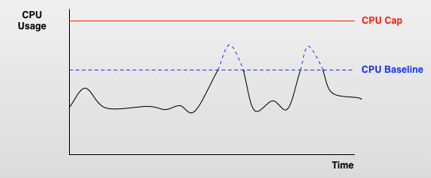

CPU bursting is a feature of SmartOS that allows hosted web applications in a zone to temporarily use more CPU cycles than is allocated to a virtual machine, providing a temporary performance boost.
In this topic:
Baseline vs. Cap
Virtual machines running SmartOS have a flexible and inflexible number of CPU cycles available at any time: baseline and cap. The CPU cap is the maximum amount of CPU cycles available to a virtual machine at any given time. The CPU baseline is a percentage of the CPU cap and is the number of CPU cycles available to it without the need to burst. When a hosted web application experiences a high volume of throughput, the virtual machine hosting the application can use CPU bursting to consume CPU cycles that exceed the baseline limit for a short period of time. See below.

The amount a virtual machine can burst depends on how much of the CPU resource pool is available. If only a single virtual machine in a datacenter needs to burst, it can use as many CPU cycles as is needed (up to the cap limit). If multiple virtual machines in a datacenter need to burst at the same time, they will share available cycles in the resource pool.
The amount of time a virtual machine can burst is set as a property in the global zone. If a virtual machine continues to burst past the allocated time limit, the CPU cap for that virtual machine is temporarily reduced to the value of the CPU baseline, effectively disabling bursting. See below.

When an application is placed in a reduced cap state for bursting too long, a timer begins to countdown that determines how long the application remains in a reduced cap state. The CPU cap is reset to the original value and bursting is re-enabled once the timer counts down to zero. The amount of time a virtual machine must stay in a reduced CPU cap state is also set as a property in the global zone.
{kind=link}